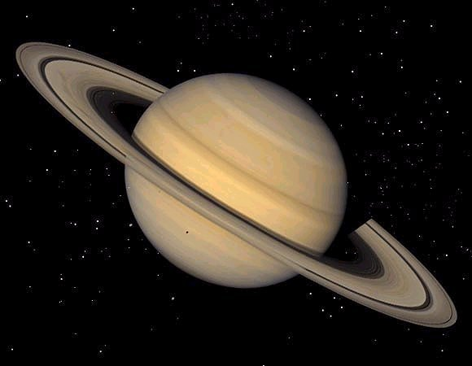

| Masa | 5.688x10^26 kg |
| Radio | 58232 km |
| Distancia relativa al Sol | 9.537 UA |
| Tiempo en completar la órbita | 29 años y 167 días |
| Temperatura media | -130.15ºC |
| Número de satélites conocidos | 82 |
Saturno es el sexto planeta del sistema solar contando desde el Sol, el segundo en tamaño y masa después de Júpiter y el único con un sistema de anillos visible desde la Tierra. Su nombre proviene del dios romano Saturno. Forma parte de los denominados planetas exteriores o gaseosos. El aspecto más característico de Saturno son sus brillantes anillos. Antes de la invención del telescopio, Saturno era el más lejano de los planetas conocidos y, a simple vista, no parecía luminoso ni interesante. El primero en observar los anillos fue Galileo en 1610, pero la baja inclinación de los anillos y la baja resolución de su telescopio le hicieron pensar en un principio que se trataba de grandes lunas. Christiaan Huygens, con mejores medios de observación, pudo en 1659 observar con claridad los anillos. James Clerk Maxwell, en 1859, demostró matemáticamente que los anillos no podían ser un único objeto sólido sino que debían ser la agrupación de millones de partículas de menor tamaño. Las partículas que componen los anillos de Saturno giran a una velocidad de 48 000 km/h, 15 veces más rápido que una bala.
Propiedades de la atmósferaLa atmósfera de Saturno posee un patrón de bandas oscuras y zonas claras similar al de Júpiter aunque la distinción entre ambas es mucho menos clara en el caso de Saturno. La atmósfera del planeta posee fuertes vientos en la dirección de los paralelos alternantes en latitud y altamente simétricos en ambos hemisferios a pesar del efecto estacional de la inclinación axial del planeta. El viento está dominado por una intensa y ancha corriente ecuatorial al nivel de la altura de las nubes que llegó a alcanzar velocidades de hasta 450 m/s en la época de los Voyager. A diferencia de Júpiter, no son aparentes grandes vórtices estables, aunque sí los hay más pequeños. Es probable que las nubes superiores estén formadas por cristales de amoníaco. Sobre ellas parece extenderse una niebla uniforme sobre todo el planeta, producida por fenómenos fotoquímicos en la atmósfera superior —alrededor de 10 mbar—. A niveles más profundos —cerca de 10 bar de presión—, el agua de la atmósfera podría condensarse en una capa de nubes de agua que aún no ha podido ser observada.
 Exploración espacialTres naves espaciales estadounidenses incrementaron enormemente el conocimiento del sistema de Saturno: la sonda Pioneer 11 y las Voyager 1 y 2, que sobrevolaron el planeta en septiembre de 1979, noviembre de 1980 y agosto de 1981, respectivamente. Estas naves espaciales llevaban cámaras e instrumentos para analizar las intensidades y polarizaciones de la radiación en las regiones visible, ultravioleta, infrarroja y de radio del espectro electromagnético. También estaban equipadas con instrumentos para el estudio de los campos magnéticos y para la detección de partículas cargadas y granos de polvo interplanetario. En octubre de 1997 fue lanzada la nave Cassini, con destino a Saturno, que incluía también la sonda Huygens para explorar Titán, la mayor y más interesante de las lunas del planeta. Se trata del último proyecto de gran presupuesto de la NASA, en colaboración con la Agencia Espacial Europea y la Agencia Espacial Italiana. Tras un viaje de casi siete años, estaba previsto que la Cassini recogiese datos sobre Saturno y sus satélites durante otros cuatro años. En octubre de 2002 la nave obtuvo su primera fotografía del planeta, tomada a una distancia de 285 millones de kilómetros, y en la que aparece también Titán. En junio de 2004 la Cassini sobrevoló Febe, otro satélite de Saturno (el más alejado), obteniendo imágenes espectaculares de su superficie, llena de cráteres. En julio del mismo año, la nave entró en órbita de Saturno. En enero de 2005 la sonda Huygens atravesó la atmósfera de Titán y alcanzó su superficie, enviando a la Tierra datos e imágenes de gran interés del satélite.